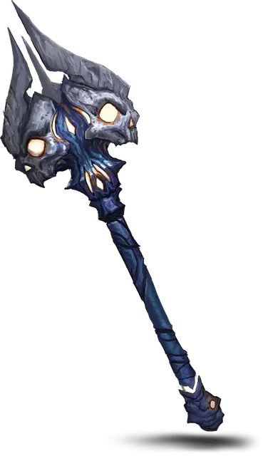

Булава ужаса
Mace of Terror
Оружие (Булава), редкое (требуется настройка)

Рекомендованная стоимость 4 000 ЗМ
Это магическое оружие имеет 3 заряда и восстанавливает 1к3 потраченных зарядов на каждом рассвете. Пока вы вооружены этим оружием, можете действием Магия потратить 1 заряд, испуская из него волну ужаса. Каждое существо по вашему выбору из находящихся в пределах 30 футов от вас должно преуспеть в спасброске Мудрости Сл 15, иначе получит состояние Испуганный на 1 минуту. Существо с таким состоянием не может совершать Провоцированные атаки и должно проводить свои ходы, пытаясь переместиться как можно дальше от вас; оно может использовать действие только для совершения Рывка или избежания эффекта, не дающего ему перемещаться. Если перемещаться некуда, оно может совершать Уклонение. В конце каждого своего хода оно повторяет этот спасбросок, при успехе оканчивая на себе этот эффект.